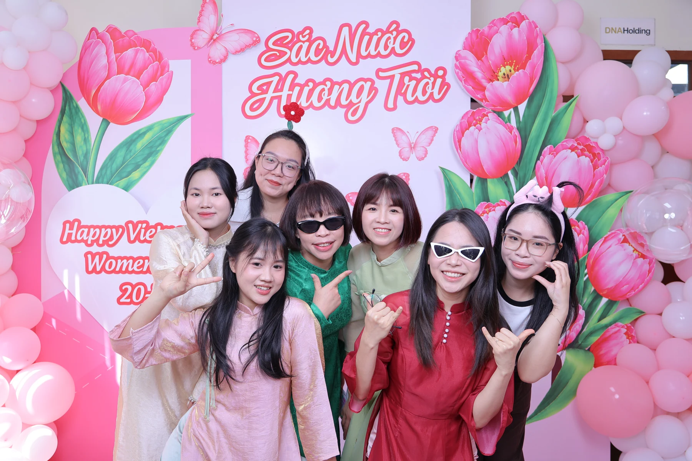
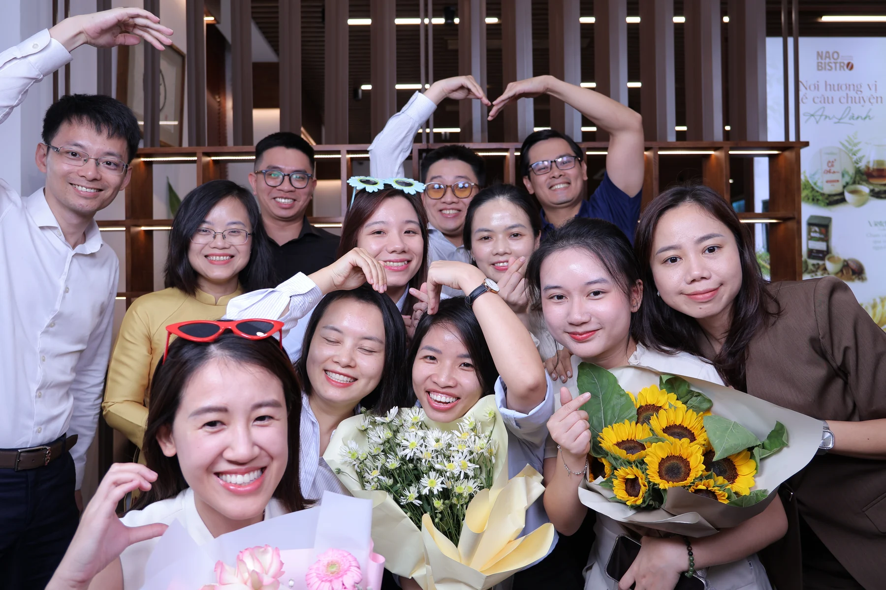
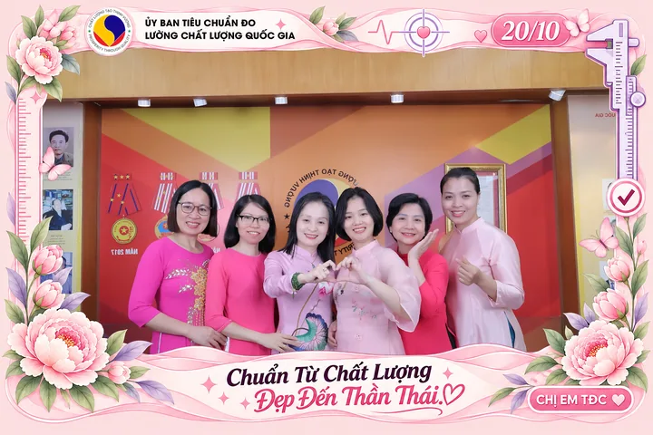

HAPPY BOOTH / NHẬT KÝ SỰ KIỆN
20/10 cùng Happy Booth:
Ngàn nụ cười được lưu giữ.
Nhân Ngày Phụ nữ Việt Nam 20/10, Happy Booth xin gửi đến một nửa yêu thương của thế giới những lời chúc tốt đẹp nhất. Chúc các chị em luôn mạnh khỏe, hạnh phúc, tự tin theo đuổi điều mình yêu thích và được trân trọng mỗi ngày. Mong rằng giữa những bộn bề công việc và cuộc sống, mỗi người đều có những phút giây dành riêng cho mình: được vui, được tỏa sáng và lưu lại nụ cười thật rạng rỡ.


VINH DỰ ĐƯỢC ĐỒNG HÀNH
Gửi lời chúc đến những tập thể đã cùng chúng tôi tạo nên ngày vui
Trong chuỗi hoạt động chào mừng 20/10 năm nay, Happy Booth vinh dự đồng hành cùng nhiều doanh nghiệp, tổ chức và công đoàn, mang trải nghiệm photobooth đến gần hơn với các nữ cán bộ, nhân viên và người lao động. Mỗi điểm đến có một màu sắc riêng, nhưng đều gặp nhau ở sự quan tâm dành cho phái nữ và mong muốn tạo nên một ngày kỷ niệm thật đáng nhớ.
Happy Booth trân trọng gửi lời chúc 20/10 đến các chị em tại:
- Bảo hiểm Bưu điện PTIChúc các chị em luôn rạng rỡ, vững vàng và đón nhận thật nhiều niềm vui trong công việc cũng như cuộc sống.
- VNDIRECTChúc các chị em tự tin với những lựa chọn của mình, bền bỉ theo đuổi mục tiêu và luôn có thật nhiều khoảnh khắc hạnh phúc.
- AAS – Smart InvestChúc các chị em luôn tràn đầy năng lượng, tỏa sáng với dấu ấn riêng và gặt hái nhiều thành công trên chặng đường phía trước.
- Trace-TecChúc các chị em mỗi ngày làm việc đều có thêm cảm hứng, thêm những kết nối tốt đẹp và những niềm vui giản dị bên đồng nghiệp.
- YoungOne (Hưng Yên)Chúc các chị em nhiều sức khỏe, luôn giữ nụ cười tươi và có những ngày thật ấm áp bên gia đình, bạn bè, đồng nghiệp.
- Công đoàn Hữu Nghị FoodChúc các nữ cán bộ, nhân viên và người lao động luôn được yêu thương, sẻ chia và có một ngày 20/10 thật ngọt ngào.
- Công đoàn Ủy ban Tiêu chuẩn Đo lường Chất lượng Quốc giaChúc các chị em luôn mạnh khỏe, giữ trọn nhiệt huyết trong công việc và rạng ngời trong những khoảnh khắc đời thường.
- Trung tâm Tim mạch – Bệnh viện Đại học Y Hà NộiChúc các nữ y bác sĩ, cán bộ và nhân viên nhiều sức khỏe, bình an và luôn nhận lại thật nhiều yêu thương từ những tận tâm mỗi ngày.
- VNPTChúc các chị em luôn tự tin, hạnh phúc và có thêm nhiều cơ hội kết nối, phát triển, khẳng định giá trị của bản thân.
- Teemazing (Compoudian Việt Nam)Chúc các chị em luôn giữ tinh thần sáng tạo, nguồn năng lượng tích cực và thật nhiều niềm vui bên tập thể của mình.
- WingsMobChúc các chị em thỏa sức sáng tạo, tự tin tỏa sáng và cùng đồng đội viết tiếp những hành trình đầy cảm hứng.
Những đơn vị đã cùng Happy Booth lưu giữ niềm vui


Một trải nghiệm mới, những nụ cười rất thật
Đây là năm đầu tiên photobooth góp mặt trong hoạt động 20/10 tại các đơn vị trong chuỗi chương trình Happy Booth đồng hành. Sự mới mẻ ấy mang đến một cách tận hưởng ngày lễ gần gũi: rủ đồng nghiệp cùng chụp, chọn một món phụ kiện vui, thử một kiểu tạo dáng và chờ đón tấm ảnh của chính mình ngay tại sự kiện.
Từ những phút đầu còn đôi chút ngại ngùng đến lúc cả nhóm hào hứng đứng sát lại trước ống kính, góc photobooth trở thành nơi mọi người thoải mái cười và thể hiện cá tính. Có người chụp cùng những đồng nghiệp thân thiết, có người muốn giữ một bức hình thật xinh cho riêng mình; rồi cùng nhau xem ảnh, bật cười và rủ thêm bạn bè vào chụp. Niềm vui khi cầm tấm ảnh vừa in chính là điều khiến hành trình 20/10 năm nay trở nên đặc biệt với Happy Booth.


Chuyên nghiệp trong vận hành, tận tâm trong từng chi tiết
Để khách mời có thể tận hưởng trải nghiệm một cách thoải mái, đội ngũ Happy Booth chăm chút từ khâu chuẩn bị góc chụp, thiết lập thiết bị đến việc phối hợp cùng đơn vị tổ chức trong suốt chương trình. Những khung ảnh mang màu sắc, logo và lời chúc riêng của từng đơn vị giúp mỗi tấm hình vừa là kỷ niệm cá nhân, vừa lưu lại dấu ấn của ngày hội tại doanh nghiệp.
Tại booth, chúng tôi luôn sẵn sàng hướng dẫn thao tác, gợi ý cách tạo dáng, hỗ trợ chọn phụ kiện và sắp xếp vị trí để cả nhóm có thể cùng xuất hiện trong khung hình. Với những khách mời lần đầu thử photobooth, một lời hướng dẫn nhẹ nhàng hay một gợi ý tạo dáng vui cũng đủ giúp mọi người tự tin hơn trước ống kính.
Sự chăm chút còn tiếp tục sau mỗi lượt chụp: in ảnh tại chỗ, hỗ trợ nhận ảnh và bọc ảnh cẩn thận để các chị em thuận tiện mang về. Từ lúc bước đến góc chụp đến khi cầm trên tay tấm hình kỷ niệm, Happy Booth mong mỗi khách mời đều cảm nhận được sự nhiệt tình, chu đáo và tôn trọng trong cách chúng tôi phục vụ.
Dấu ấn từ chuỗi hoạt động 20/10
Tổng số liệu của toàn bộ chuỗi chương trình Happy Booth đồng hành dịp 20/10.
Những con số kể một hành trình tận tâm
Trong toàn bộ chuỗi hoạt động 20/10, Happy Booth đã in hơn 3.000 tấm ảnh, gửi đến hơn 1.000 phụ nữ và dành hơn 30 giờ phục vụ tại các chương trình. Đằng sau mỗi con số là những lượt chụp đầy hào hứng, những tấm ảnh được trao tận tay và sự phối hợp bền bỉ của đội ngũ để niềm vui của khách mời luôn được nối tiếp.
Với Happy Booth, giá trị của một tấm ảnh còn nằm ở câu chuyện đi cùng nó: một lần cả phòng ban đứng chung khung hình, một nụ cười tự nhiên giữa ngày làm việc hay một kỷ niệm nhỏ để đặt trên bàn và nhớ về những người đồng nghiệp thân quen. Chúng tôi hạnh phúc khi được góp phần biến sự quan tâm của doanh nghiệp và công đoàn thành những trải nghiệm cụ thể, gần gũi và có thể mang về.
Một tấm ảnh nhỏ, một niềm vui có thể mang về.
Cảm ơn vì đã để Happy Booth góp mặt trong ngày đặc biệt
Happy Booth xin chân thành cảm ơn các tập đoàn, doanh nghiệp, đơn vị và tổ chức công đoàn đã quan tâm, tin tưởng lựa chọn dịch vụ của chúng tôi trong chuỗi hoạt động Ngày Phụ nữ Việt Nam 20/10. Sự phối hợp và hỗ trợ của quý đơn vị là một phần quan trọng để mỗi chương trình diễn ra trọn vẹn, để đội ngũ Happy Booth có thể dành sự chăm chút cho từng khách mời.
Cảm ơn các chị em đã mang đến góc photobooth những nụ cười rạng rỡ, sự hào hứng và những khoảnh khắc đáng nhớ. Chính niềm vui của mọi người là động lực để chúng tôi tiếp tục hoàn thiện chất lượng dịch vụ và giữ sự tận tâm trong mỗi lần đồng hành.
Happy Booth hy vọng sẽ tiếp tục được gặp lại quý đơn vị trong những dịp tri ân nhân viên, ngày hội gia đình, lễ kỷ niệm thành lập, chương trình gắn kết nội bộ hay tiệc cuối năm. Mỗi sự kiện là một câu chuyện mới, và chúng tôi mong được cùng quý đơn vị viết tiếp câu chuyện ấy bằng những bức ảnh đẹp và những trải nghiệm thật vui.
Happy Booth — Lưu nụ cười hôm nay, giữ kỷ niệm mai sau.
NHỮNG KHOẢNH KHẮC CÒN MÃI
29 khung hình.
Thật nhiều niềm vui.
Cùng nhìn lại những nụ cười, những tấm ảnh in và những khoảnh khắc kết nối trong chuỗi chương trình 20/10. Bấm vào từng ảnh để xem lớn hơn.